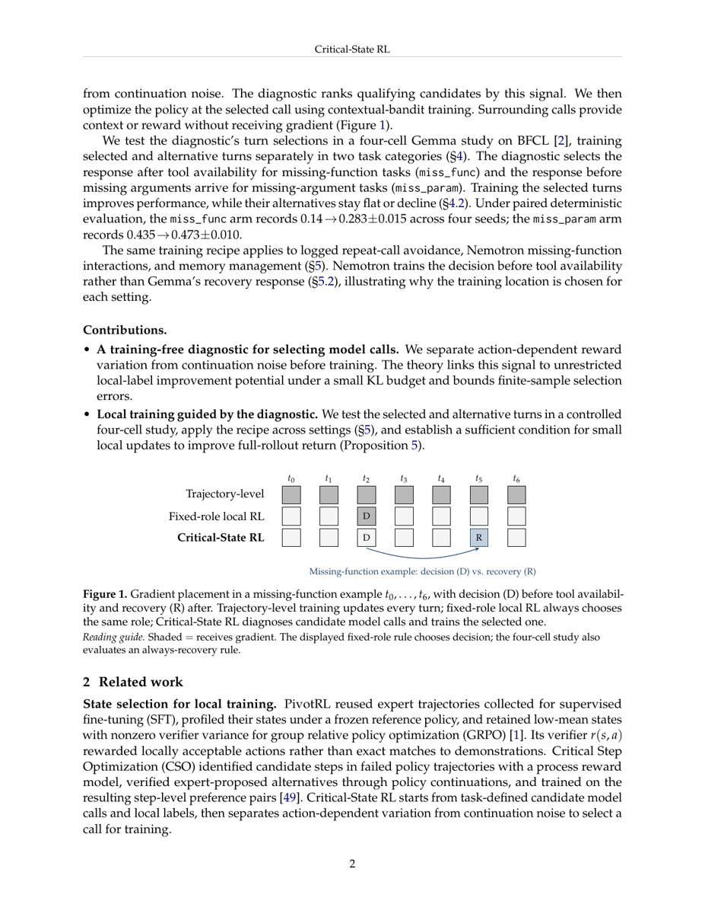
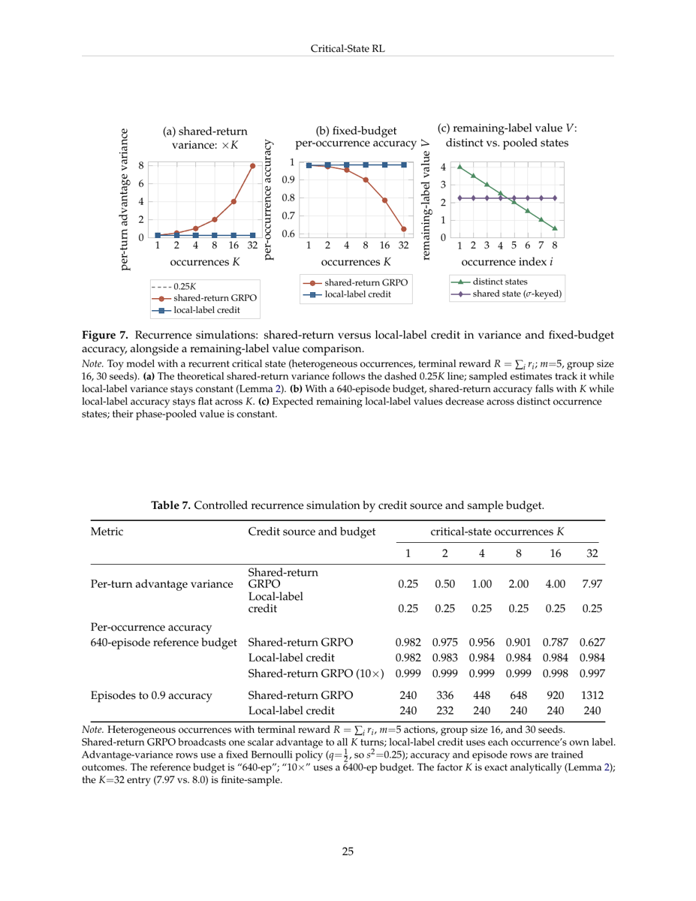
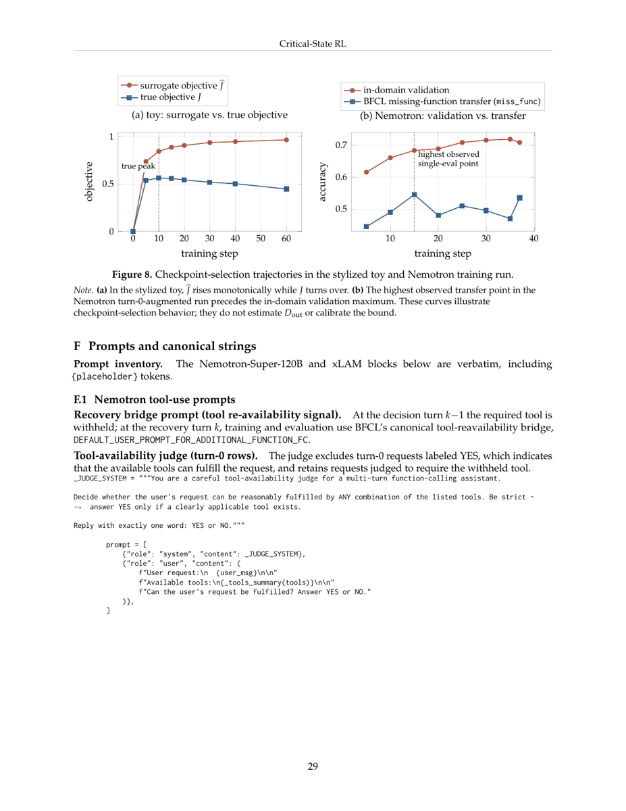

TL;DR — Dans une trajectoire tool-use multi-turn, une récompense qui varie d'un rollout à l'autre ne dit pas quel appel est entraînable : la variance du reward mélange l'effet de l'action courante et le bruit des tours suivants. Le papier propose un diagnostic sans entraînement qui isole la première composante par échantillonnage niché (nested sampling), sélectionne un seul appel de modèle, et n'y applique que là le gradient, en contextual-bandit.
Claim principal, formulé précisément — Sur BFCL v4 multi_turn, avec no-think Gemma-4-26B-A4B, le critère argmax_t Var_{a_t} E[z | x_t, a_t] (variance des moyennes conditionnelles à l'action, corrigée du bruit de continuation) désigne, dans chaque catégorie, le tour dont l'entraînement local améliore le benchmark, tandis que l'entraînement du tour alternatif reste plat ou dégrade : miss_func → tour de recovery 0.14 → 0.283±0.015 (+14.3 pp) vs tour de decision 0.14 → 0.095 (−4.5 pp) ; miss_param → tour de decision 0.435 → 0.473±0.010 (+3.8 pp) vs recovery 0.435 → 0.445 (+1 pp) [Tab. 1, §4.2].
⚠️ Claim secondaire, moins mis en avant mais plus important pour notre revue : l'auteur mesure l'érosion du signal terminal en fonction du nombre de tours (App. E.1), et la borne analytiquement (SNR de gradient par occurrence en Θ(K^{−1/2}), coût en échantillons en Θ(K), pénalité non supprimable par aucun baseline constant).
Aucune tâche nouvelle n'est construite : le papier réutilise BFCL v4 (Patil et al., ICML 2025), benchmark humain, plus trois sources dérivées.
| Source | Nature | Rôle |
|---|---|---|
BFCL v4 multi_turn (base, miss_func, long_context, miss_param) |
benchmark humain existant | évaluation (toutes les cellules) |
Variante « home-buying » renommée de BFCL multi_turn |
minée/dérivée : mêmes APIs stateful, même structure de tours, entités renommées | entraînement + validation in-domain Nemotron. ⚠️ Les auteurs écrivent explicitement : « it is not held out » [App. D.1] |
| Tâche « hospital-ward », conçue indépendamment | synthétique, conçue par les auteurs | entraînement pour mesurer un transfert réellement held-out vers BFCL non modifié [Tab. 5] |
| Logs d'interactions réelles Nemotron-Super-120B | minées | entraînement repeat-call, contextes logués figés, sans exploration online [§5.1, App. D] |
| Tâche synthétique « field-survey » | générée | diagnostic uniquement, pas d'entraînement — sert à mesurer l'érosion du reward terminal vs K [App. E.1] |
error_type (empty_turn_model_response = « defer/refuse » vs instance_state_mismatch = « wrong write »). Interprétation humaine de ces motifs → identification de la phase empty_turn en miss_func et du motif de refus chez no-think Gemma [App. C.2].miss_func, tour k−1 avant l'appel retenu, avec la double condition gt[k−1] = [] et gt[k] non vide [App. C.2].miss_param 17→0, miss_func 10→0), ce qui soutient l'explication « refus + relance vague ». ⚠️ Les auteurs qualifient eux-mêmes ce résultat de « directional » : la non-déterminisme FP8 + expert-parallel rendait un rerun complet trop bruité [App. C.2].memory-full — aucune identification à faire [§5.3].extra_info.keywords, avec consigne de conserver les négations signifiantes. Le RL note ensuite par matching exact déterministe [App. F].miss_param/recovery qui en a 54 (10 avaient des préfixes générés par le modèle qui variaient) [App. C.3].multi_turn appariés, décodage déterministe nt=1, checkpoint step 30 [Tab. 1].Non caractérisée. Seuls indices : miss_param est décrite comme la cellule « non-saturated » [Tab. 2], miss_func part très bas (0.110–0.14 selon le protocole), et pour la porte no_write de Nemotron « the decision already passes the no-write gate at a high rate (no_write near 0.97), leaving little headroom in this gate » [App. C.3] — c'est-à-dire une saturation du gate mesurée, pas une distribution de difficulté.
Pas de filtrage pass@k du modèle de base. Le filtrage est celui des trois portes du diagnostic [Déf. 1, App. B] :
- (i) action-sufficiency : argumentée depuis la structure de la tâche, non mesurée ;
- (ii) headroom : max_a Q(x,a) − E_{a~π₀} Q(x,a) ≥ Δ_head > 0, mesurée contre une politique de référence π₀ ;
- (iii) trainability : Var_{a~π_θ} Q(x,a) > 0, mesurée sur la politique de base.
« Contexts failing either (ii) or (iii) are split or filtered before ranking » ; « The headroom margin is task-specific » — la valeur de Δ_head n'est jamais donnée [App. B]. Les Limitations le confirment : l'étude « tests categorical turn selection rather than calibrating variance magnitudes or diagnostic thresholds » [§7].
Par ailleurs l'optimiseur utilise DAPO dynamic sampling (filtre des groupes tout-correct / tout-faux) [App. C.3] — le papier montre précisément que ce filtre-là est insuffisant (§3 ci-dessous).
miss_func entraînent le recovery, les lignes miss_param entraînent la decision [App. C.3]. C'est un curriculum par affectation de tour, pas par difficulté.multi_turn avec APIs et structure de tours identiques, non held-out ; « The Nemotron benchmark results use the unmodified BFCL v4 multi_turn benchmark » [App. D.1]. La transparence est bonne, mais ⚠️ les gains Nemotron in-domain (+4.4 pt) sont mesurés sur BFCL après entraînement sur un clone renommé de BFCL.Aucun cold-start SFT pour la méthode elle-même. Le SFT ciblé n'apparaît que comme comparateur (§7). Le checkpoint xLAM est un fine-tune Qwen3-235B-A22B sur données de function-calling produites par APIGen [App. C.3] — c'est la lignée du modèle de base, pas une étape pré-RL de ce travail.
« For the missing-function application, humans proposed the candidate phase and designed the counterfactual validation; deterministic rules selected rows » [App. C.1]. Nombre d'annotateurs, heures, coût : non précisé. Coût LLM (juge de disponibilité d'outil, extraction GPT-4o) : non précisé.
Historique de chat BFCL multi_turn standard : messages utilisateur, appels d'outils de l'assistant, résultats d'outils en JSON. Pour la mémoire, le system message est build_unified_system_message(memory_state) = BACKEND_INSTRUCTION + état mémoire sérialisé, identique en entraînement et en évaluation (recopié verbatim [App. F]) : deux types de mémoire, « Core Memory » (limitée en taille, toujours visible dans le contexte) et « Archival Memory » (grande capacité, hors contexte immédiat).
APIs stateful de BFCL v4. Le papier ne donne pas de liste exhaustive ni de signatures formelles, seulement des instances. Relevées :
- Domaine home-buying / inspection [Fig. 4] : create_inspection_request({"title": "Roof leak", …}) → {"id": 1, "status": "Open"} ; edit_inspection_request({"request_id": 1, …}) ; get_my_inspection_requests({}) (l'outil retiré) ; get_inspection_request({"request_id": 1}) — décrit comme le « near-name decoy », un leurre read-only au nom proche.
- Mémoire : core_memory_add, archival_memory_add, core_memory_clear, archival_memory_clear, archival_memory_search, list_keys [§5.3, App. D.2].
miss_func de Gemma ; (b) trajectoire dont les tours aval, sans gradient, fournissent le signal de conséquence — entraînement de la decision miss_func de Nemotron.miss_func [§4.1] : un outil requis est retiré jusqu'au tour k. La requête substantielle arrive au tour k−1, outil indisponible ; le tour k porte un message utilisateur vide que le harness remplace par un bridge fixe annonçant la disponibilité de l'outil. L'agent doit donc différer ou émettre une requête read-only au tour k−1 (« decision turn »), puis émettre l'appel retenu au tour k (« recovery turn »). L'outil retiré est encodé missed_function = {"k": [tool]}.miss_param : la fonction est présente mais un argument requis manque jusqu'au tour suivant ; l'échec au decision turn est un appel state-changing prématuré [§4.1].z doit être mesurable en ≤ h tours, h ≪ longueur d'épisode [Déf. 1]. En pratique h = 1 (decision → recovery). Les auteurs notent que cette borne « prevents the vacuous choice z := R for any state ».multi_turn_checker.py, state-based et cumulatif : pénalise (i) les appels state-changing supplémentaires, (ii) les appels requis manquants, (iii) les violations du step-cap par tour — mais pas les requêtes read-only [§4.1, App. D.1]. Ce dernier point est structurant : c'est ce qui rend la porte no_write alignée avec le benchmark.nt=1, évaluation appariée sur 200 items, step fixe 30 [Tab. 1].Les échecs mémoire renvoient un JSON d'erreur, identique côté données d'entraînement et côté évaluateur BFCL [App. F] :
{"error": "Core memory is full. Please clear some entries."} / {"error": "Long term memory is full. Please clear some entries."}
Gestion des sorties mal formées (parsing d'appel d'outil invalide) : non précisé.
| Nemotron | xLAM (mémoire) | Gemma | |
|---|---|---|---|
| Modèle | Nemotron-Super-120B | Qwen3-235B-A22B fine-tune interne (APIGen) | no-think Gemma-4-26B-A4B |
| Algo | GRPO + DAPO dynamic sampling | GRPO + DAPO dynamic sampling | non précisé (GRPO implicite ; « contextual-bandit training ») |
| Stack | NeMo-RL (Megatron) + NeMo-Gym | verl + FSDP | non précisé |
| Adaptation | LoRA rank 64, α = 256 | non précisé | non précisé |
| LR | 5×10⁻⁶, lr_decay_iters = 30 |
non précisé | 10⁻⁶ [App. E.2] |
| Coef. KL | 0 | non précisé | non précisé |
| Batch | 64 prompts/step × batch multiplier 4 | non précisé | non précisé |
| Groupe | 32 générations/prompt | non précisé | non précisé |
| Checkpoint retenu | step 15 (transfert) / 35 (in-domain) | step 240 | step 30 (4 cellules), step 20 (mémoire) |
Température d'échantillonnage à l'entraînement, longueur max de génération, clipping, normalisation de l'advantage : non précisé. Compute en GPU-heures : non précisé. Seule mesure de coût, mais elle est précieuse : « In the Nemotron comparison, a whole-trajectory optimizer step cost 16–30× as much as an occurrence-local RL step » [App. C.3].
miss_func, variante home-buying [Fig. 4]Contexte (tours antérieurs, abrégé)
[user] Submit a high-priority inspection request titled 'Roof leak' ...
[call] create_inspection_request({"title": "Roof leak", ...}) -> {"id": 1, "status": "Open"}
[user] Update the inspection request to lower the priority ...
[call] edit_inspection_request({"request_id": 1, ...}) -> updated
DECISION TURN (get_my_inspection_requests retiré de la liste d'outils)
[user] Show me all my inspection requests
✗ no_write(a_dec)=0 (gated) : tout appel state-changing, ex. edit_inspection_request(...)
○ no_write(a_dec)=1 (non gated) : requête read-only vers le leurre au nom proche
get_inspection_request({"request_id": 1}) ; le reward repose alors sur le tour de recovery
✓ no_write(a_dec)=1 : différer en langue naturelle,
"I currently can't list your inspection requests ..."
BRIDGE MESSAGE (outil ré-ajouté) — BFCL DEFAULT_USER_PROMPT_FOR_ADDITIONAL_FUNCTION_FC
[user] I have updated some more functions you can choose from. What about now?
RECOVERY TURN (rollout reward-only, sortie y_rec — AUCUN gradient)
[call] get_my_inspection_requests({})
STORAGE TIME (occurrence candidate) Trigger : memory-full write failure
[user] "success in finance MEANS NOTHING if you sacrifice the relationships that matter most."
[store] core_memory_add(...) -> "values relationships over financial success"
→ Négation absolue perdue
RETRIEVAL TIME (deux tours plus tard) Conséquence aval
[user] "how much does success in finance mean if I sacrifice the relationships that matter the most?"
[ans] correct : "Nothing"
modèle : "It means very little, if anything ..."
→ Mauvaise conséquence
⚠️ Ce cas est l'origine de la règle « Include negations when they are meaningful » du prompt d'extraction GPT-4o. Directement pertinent pour le juridique (une négation, une exception, une condition suspensive perdue au stockage → réponse fausse en aval).
⚠️ Papier ALGO : cette section porte la contribution. Je sépare (A) la définition d'un état critique, (B) ce que ça change au gradient, (C) les rewards réellement implémentés, (D) la fiabilité.
Vocabulaire du papier :
- occurrence = un appel de modèle concret ;
- occurrence-local label = son reward local, noté z ;
- candidate phase σ = une classe d'équivalence de contextes partageant une structure de tâche (ex. « l'outil nécessaire est indisponible »), pas un tour fixe ni un contexte unique.
Définition (Critical state). Relativement à une politique π_θ et à une référence π₀, σ est un état critique s'il admet un label local
z_i, fourni par l'environnement ou un oracle/proxy et mesurable en au plus h tours (h ≪ longueur d'épisode). AvecQ(x,a) := E[z | x,a], tout contexte retenu satisfait :
- (i) action-sufficiency :
R ⊥ a_i | (x_i, z_i)— le label médiatise entièrement la relation entre l'action et le retour du benchmark ;- (ii) headroom :
max_a Q(x,a) − E_{a~π₀} Q(x,a) ≥ Δ_head > 0;- (iii) trainability :
Var_{a~π_θ(·|x)} Q(x,a) > 0.
Trois remarques du papier, toutes importantes :
- La borne h sur la fenêtre du label « prevents the vacuous choice z := R for any state » — sans elle, tout état serait critique.
- Δ_head est « task-specific » et jamais chiffrée.
- L'entraînement dirigé par benchmark exige en plus un label return-aligned (Thm. 2 ci-dessous) ; « Exact sufficiency is the theoretical condition on the whole label » — les auteurs reconnaissent que z_tool implémenté n'est qu'un proxy opérationnel.
Critère de rang : parmi les candidats passant les portes sous un label commun,
sélectionner argmax_{tour t} Var_{a_t} E[ z | x_t, a_t ]
[§3]. C'est le principe « variance-of-conditional-means » de Karino et al. (2020), que le papier reprend explicitement, mais appliqué sous la politique de base et avec estimation par échantillonnage niché plutôt que par Q-values apprises [§2].
Comment il est diagnostiqué — le nested within-prefix sampling [§3] :
1. échantillonner un préfixe issu de la politique elle-même (⚠️ pas teacher-forced : « Ground-truth teacher-forced prefixes can mask recovery-turn trainability by saturating the action distribution at the candidate occurrence ») ;
2. à ce préfixe fixé, tirer n actions candidates ;
3. geler chaque action et rééchantillonner m continuations reward-only.
Le papier avertit aussi contre l'alternative naïve : « Pooling raw labels across model-generated prefixes mixes action variation with upstream randomness ».
Estimateur [App. B] — design niché équilibré, n ≥ 2 actions, m ≥ 2 continuations, indépendantes conditionnellement aux actions. S²_between = variance d'échantillon (dénominateur n−1) des n moyennes d'action ; S²_within = moyenne des variances intra-action (dénominateur m−1) ; V_cont = E_a Var(z|x,a) :
E S²_between = V_act + V_cont / m
V̂_act = S²_between − S²_within / m (non biaisé : E V̂_act = V_act)
Correction standard de nested simulation (Sun 2011 ; Goda 2017). « finite estimates can be negative » — et les auteurs les conservent : « The mean includes every clean-prefix scenario, with zero and negative estimates retained » [App. C.3]. ✅ Bonne pratique : pas de biais de sélection par troncature à zéro.
Précision finie [Prop. 2, App. B] :
E_{n,m} = Var(V̂_act)
= Var_a(d²)/n + 4 E_a[d²ν]/(nm) + 2 E_a[ν²]/(nm(m−1)) + 2(V_act + V_cont/m)²/(n(n−1))
avec d(a) = Q(a) − q, ν(a) = Var(z|x,a). Borne de mauvais classement entre deux candidats d'écart Δ = V₁ − V₂ (Cantelli) :
Pr(V̂₂ ≥ V̂₁) ≤ (E₁ + E₂) / (Δ² + E₁ + E₂)
et E₁ + E₂ ≤ δΔ²/(1−δ) garantit la sélection correcte avec probabilité ≥ 1−δ.
Résultat de design le plus actionnable — « More continuations cannot replace more actions » : quand m → ∞ à n fixé, le bruit de continuation disparaît mais la variance de l'estimateur tend vers Var_a(d²)/n + 2V²_act/(n(n−1)) > 0. Inversement, tout m ≥ 2 fixé permet une estimation consistante quand n croît. « Thus independent actions can resolve the ranking without precise estimates of every action's label mean » [App. B].
Moyennage sur les préfixes : pour P préfixes indépendants, Var(V̂_bar) = [Var_ρ(V_act(X)) + E_ρ E_{n,m}(X)] / P.
À quel coût : n = 8 actions, m = 4 continuations par action, par scénario, sur 64 scénarios par cellule, avant tout entraînement, avec les politiques de base et de référence gelées [App. C.3, Alg. 1]. Soit ~32 labels échantillonnés par scénario × 64 ≈ 2 048 par cellule candidate, × 4 cellules. Le diagnostic est training-free et gradient-free — c'est son principal argument pratique.
Décomposition (loi de la variance totale) [§3] :
Var(z | x) = Var_a Q(x,a) + E_a Var(z | x,a)
\___________/ \______________/
signal action bruit de continuation
Le filtre DAPO dynamic sampling (rejet des groupes tout-correct/tout-faux) ne détecte que Var(z|x) > 0 au niveau du groupe : il ne sépare pas les deux termes.
Contre-exemple analytique [Fig. 3, App. B] : avec politiques de base et de référence uniformes, les moyennes conditionnelles Bernoulli (0, 0, 1, 1) et (0, ½, ½, 1) donnent exactement le même label marginal Bernoulli(½) et exactement le même headroom de ½, mais V_act = 1/4 vs 1/8. Le papier en tire une impossibilité : « No selector using only independent marginal labels and headrooms can distinguish swapped candidates, whose rankings reverse. Its worst-case error is at least 1/2, at any sample size. »
Instance empirique [§3, « clean refusals with mixed rewards »] : dans le pilote no-think Gemma miss_func, un groupe de prompts à reward mixte échantillonné rend la distinction visible — « In every surviving rollout, the decision response is a clean refusal with no tool call, yet reward swings 0↔1 with within-group std 0.477 ». Un filtre à outcome mixte retiendrait ce groupe alors que les différences de reward ne distinguent en rien le comportement observé à la decision. ✅ C'est l'observation qui a motivé toute la décomposition — et c'est un argument de terrain, pas un contre-exemple de tableau noir.
Quels tours reçoivent du signal : exactement un — l'occurrence sélectionnée. « Optimize the policy using the local label, applying the RL loss only to the selected call's generated tokens. Its prefix supplies context; any continuation supplies reward without receiving gradient » [Alg. 1, étape 4]. Entraînement contextual-bandit : pas de bootstrapping, pas de return-to-go, pas de discount.
Prop. 1 [App. B] — l'identité fondatrice. Pour un baseline fixe b = b(x) :
E[g(z − b)] = E_p[g(Q − q)] =: μ
Var(g(z − b)) = Var_p(g(Q − b)) + E_p[ ||g||² Var(z | x,a) ]
⟹ V_act = 0 implique μ = 0, même quand les labels échantillonnés varient. C'est la justification formelle exacte du titre : un reward qui varie sans variance action-dépendante produit un gradient d'espérance nulle et de variance strictement positive — du bruit pur.
Thm. 1 (amélioration locale à budget KL fixé) [App. B] — à préfixe x fixé et noyau de continuation gelé, avec G_x(ε) := max_{KL(p'||p) ≤ ε} (E_{p'}Q − E_p Q) :
si V_act > 0 : G_x(ε) = sqrt(2 ε V_act) + O(ε) quand ε ↓ 0
si V_act = 0 : G_x(ε) = 0 pour tout ε
Preuve par tilting exponentiel (p_η(a) = p(a) e^{ηA(a) − ψ(η)}, optimiseur familier de relative-entropy policy search). Moyenné sur une distribution de préfixes fixée ρ : G_ρ(ε) = sqrt(2 ε V̄_act) + O(ε).
→ V_act n'est pas un heuristique : c'est, au premier ordre, le gain local maximal atteignable sous budget KL.
Caveat que les auteurs posent eux-mêmes — la part accessible à une politique paramétrée. Avec F = E[ggᵀ], V_acc = μᵀF†μ :
V_act = V_acc + E_p[(Q − q − gᵀF†μ)²] et max_{uᵀFu/2 ≤ ε} μᵀu = sqrt(2 ε V_acc)
Une politique catégorielle complète a V_acc = V_act. Mais à travers les préfixes, μ̄ᵀ F̄† μ̄ ≤ V̄_act, et « Opposing prefix gradients can cancel ». ⚠️ Il y a donc un écart explicite, non quantifié empiriquement, entre ce que le diagnostic mesure et ce qu'une mise à jour partagée peut effectivement capter. Les auteurs l'assument : « The diagnostic is gradient-free; the four-cell intervention tests the shared-policy response. »
Thm. 2 — du crédit local au crédit terminal [App. B]. Avec ĝ^traj_i = g_i(R − b(x_i)), ĝ^flat_i = g_i(z_i − q(x_i)), F_i = σ(x_i, a_i, z_i) : si R ⊥ a_i | (x_i, z_i) et si φ_x(z) := E[R|x,z] est affine de pente λ(x), alors
E[ ĝ^traj_i | F_i ] = λ(x_i) ĝ^flat_i
Var(ĝ^traj) = Var(λ(x) ĝ^flat) + E[ ||g||² Var(R | x,a,z) ]
Conséquences énoncées : λ(x) > 0 préserve la direction du gradient ; un λ petit atténue le crédit local et un λ négatif l'inverse ; « Binary labels make the link affine automatically; continuous missing-function and memory scores require calibration of the full label ». Si le résidu de suffisance en moyenne conditionnelle est borné par ε, l'erreur sur l'identité de gradient est au plus ε‖g‖.
⚠️ Point faible identifié : le papier énonce que les scores continus exigent une calibration de λ… et ne rapporte aucun λ mesuré pour le reward mémoire (additif, borné à [−1,1], avec des gates durs à −1.0 et −0.5 — donc manifestement non affine en z). La seule mesure de λ concerne un proxy tout différent (ci-dessous).
Mesure empirique de la part du label dans le retour [App. B, « Empirical single-occurrence scope »] — sur les rollouts home-buying Gemma-4-26B-A4B, n = 6560, avec un proxy « per-turn-share » :
S_z = Var(z) / Var(R) = 0.31 IC 95 % [0.29, 0.33] sqrt(S_z) ≈ 0.56
pente λ ≈ 1.7 corrélation 0.95
✅ Honnêteté notable : « The ratio and its square root depend on label scale: these are descriptive associations, not measured SNR losses or a fitted 1/√K exponent. »
| Application | Occurrence sélectionnée | Label : source et construction | Type |
|---|---|---|---|
| Repeat-call logué (Nemotron) | réponse suivante à une position de trace flaggée | repeat_of_history déterministe, action-only |
binaire, exact match sur l'historique |
| Missing function (Nemotron) | decision, avant disponibilité de l'outil | z_tool = no_write(a_dec) × consequence(y_rec) |
hybride multiplicatif : gate binaire × score de conséquence échantillonnée |
| Mémoire (xLAM) | réponse de storage après échec memory-full | proxy mots-clés GPT-4o précalculé ; reward additif behavior–content + gates durs | hybride additif + hard gates |
| Mémoire (Gemma) | réponse de storage ou de retrieval | storage : proxy mots-clés ; retrieval : couverture des faits nécessaires à la requête attendue | idem + couverture |
1. repeat_of_history — « Given the logged context, this label depends only on the current action, so its variation is action-dependent and has no downstream sampling term » [§5.1]. ⚠️ Cas dégénéré et idéal : V_cont = 0 par construction, le diagnostic est trivial. Utile comme borne supérieure de ce que la méthode peut faire.
2. Missing-function multiplicatif [Éq. 1, §3.2, App. D.1] :
z_tool = no_write(a_dec) × consequence(y_rec)
\______________/ \_______________/
axe procédural axe de contenu
(behavior) (consequence)
no_write(a_dec) ∈ {0,1} = 1 ssi l'action au decision turn n'émet AUCUN write state-changing
(autorise donc la déferral ET les requêtes read-only)
consequence(y_rec) ∈ [0,1] = l'output de recovery contient-il l'appel retenu,
apparié par NOM de fonction avec comparaison d'arguments LÉNIENTE
« The sampled recovery supplies reward without receiving gradient. » La recovery échantillonnée rend z stochastique même après fixation de l'action de decision [App. B] — c'est précisément ce que le nested sampling doit démêler.
⚠️ Limite reconnue par les auteurs [App. D.1] : « The implemented name-based gate approximates "no state-changing write" over the tool set without verifying irreversibility, so it is not an exact read/write partition ». Bonne nouvelle pour l'alignement avec le benchmark : l'évaluateur BFCL cumulatif ne pénalise pas les requêtes read-only, donc le gate et le benchmark sont d'accord sur le point clé.
3. Reward mémoire additif [§3.2, App. D.2] :
total = [ keyword_match_score + 0.1 · memory_type_score ] + behavior_bonus + memory-full bonuses
\_____________________ base ____________________/
total clippé à [−1, 1]
behavior_bonus : +0.1 par élément procédural correct (replace, archival add, remove-before-add)
memory-full bonuses : +0.2 terme de résultat et ±0.2 terme de trash-removal
HARD GATES (écrasent la somme) :
destructive memory clear → −1.0
memory-full naive add-without-remove → −0.5
✅ Les hard gates sont un design explicitement anti-hacking : ils empêchent de « résoudre » le problème « mémoire pleine » en effaçant la mémoire (ce qui détruirait l'information nécessaire en aval).
4. Proxy de contenu : GPT-4o extrait hors-ligne 2–5 termes requis ; « RL scores storage text by deterministic exact matching » [App. F]. ✅ Pattern remarquable : le LLM construit la rubrique hors-ligne, le vérifieur à l'entraînement est déterministe.
(a) Juge de disponibilité d'outil (lignes turn-0, Nemotron) [App. F, verbatim] :
_JUDGE_SYSTEM = """You are a careful tool-availability judge for a multi-turn function-calling assistant.
Decide whether the user's request can be reasonably fulfilled by ANY combination of the listed tools. Be strict - answer YES only if a clearly applicable tool exists.
Reply with exactly one word: YES or NO."""
prompt = [
{"role": "system", "content": _JUDGE_SYSTEM},
{"role": "user", "content": (
f"User request:\n {user_msg}\n\n"
f"Available tools:\n{_tools_summary(tools)}\n\n"
f"Can the user's request be fulfilled? Answer YES or NO."
)},
]
Le juge exclut les requêtes YES (satisfaisables par les outils présents) et retient celles qui exigent l'outil retiré. Modèle du juge : non précisé. Accord avec des humains : non mesuré.
(b) Extraction de mots-clés GPT-4o (mémoire) [App. F, verbatim] :
SYSTEM_PROMPT = """You are a keyword extraction assistant. Given a ground truth value for a memory entry, extract 2-5 key factual terms or phrases that MUST be present in any correct version of this entry.
Focus on:
- Proper nouns (names, places)
- Numbers, dates, times
- Key actions or states (e.g., "high cholesterol", "not married")
- Essential descriptors that distinguish this entry
Rules:
- Return ONLY a JSON array of lowercase strings
- Each keyword should be 1-3 words
- For very short values (1-2 words), return the value itself as the only keyword
- Avoid generic words like "user", "the", "is", "a"
- Include negations when they are meaningful (e.g., "not" in "not married")"""
5 exemples few-shot fournis, dont : "Blood work 2025-11: cholesterol high (user reported). No numeric values provided. Recommend lifestyle changes and follow-up with PCP." → ["blood work", "2025-11", "cholesterol high", "lifestyle changes", "pcp"] ; et "User likes art, particularly the impressionists and pointillism. However, user says they are not a good artist themselves." → ["art", "impressionists", "pointillism", "not a good artist"].
Variantes d'assistant pré-bridge (injection de préfixe contrôlée) [App. F] — trois formulations refusal_pre_inject (« I don't have a tool that can do that right now — could you enable a function that handles it… ») et trois clarification (« I want to make sure I get this right — could you tell me the specific value you'd like me to use? »). Sert à fabriquer des préfixes propres et contrôlés pour le diagnostic.
Bridge canonique : BFCL DEFAULT_USER_PROMPT_FOR_ADDITIONAL_FUNCTION_FC = « I have updated some more functions you can choose from. What about now? » [App. F, Fig. 4].
❌ Aucune mesure d'accord vérifieur↔humain, nulle part, pour aucun des quatre labels. Pas de précision, pas de rappel, pas de taux de faux positifs/négatifs. C'est le trou le plus net du papier pour notre usage.
Validations indirectes seulement :
- Le gate no_write basé sur les noms est déclaré approximatif par les auteurs [App. D.1].
- Le proxy mots-clés mesure la rétention de mots-clés dans la réponse de storage, alors que « the benchmark evaluates the full store→retrieve→answer chain » [§3.2, App. D.2] — l'écart proxy↔benchmark n'est pas quantifié.
- Le check contrefactuel de la phase candidate est qualifié de « directional » faute de pouvoir relancer une passe complète [App. C.2].
- La seule validation réelle est conséquentialiste : le modèle entraîné sur le proxy progresse sur BFCL non modifié (et sur un bridge jamais vu, et depuis une tâche conçue indépendamment). C'est une validation faible mais non triviale.
Robustesse au hacking :
- ✅ Anti-hacking by design : hard gates mémoire (−1.0 destructive clear, −0.5 naive add) ; gate procédural no_write (empêche de « réussir » miss_func par un write prématuré) ; borne h sur la fenêtre du label (empêche z := R).
- ❌ Aucun test adversarial du vérifieur n'est rapporté.
- Hacking observé chez le comparateur, pas chez la méthode : « The targeted-SFT runs over-bias toward firing the tool and break the required refusal » — le meilleur checkpoint SFT ciblé finit 6 pp sous la base sur miss_func, alors que Critical-State RL préserve les deux comportements [§4.2]. Les auteurs attribuent l'écart au fait que le SFT apprend des cibles d'action fixes, tandis que la méthode échantillonne on-policy et note avec le vérifieur.
- Sur-optimisation du proxy observée et chiffrée (l'équivalent d'un reward hacking au niveau du proxy) : le comparateur Monte-Carlo RTG atteint 0.997 de gym validation mais seulement 0.45 sur BFCL, contre 0.77 / 0.473 pour Critical-State RL [Tab. 2]. ⚠️ Signature classique : quasi-saturation du proxy, transfert dégradé.
- Dégâts collatéraux mesurés : dans le run Gemma category-routed, les catégories non ciblées chutent entre les steps 30 et 45 — base 0.72 → 0.68 et long_context 0.61 → 0.53 [App. E.2]. C'est le drift que la théorie de l'App. E.2 prédit.
- Compromis mesuré sur repeat-call : « the trained models skip 2–3 of 20 needed calls across seeds, compared with 2 at the start » [App. D] — entraîner à ne pas répéter augmente marginalement les appels manqués.
Occurrence-local RL = contextual bandit sur un seul appel. « Optimize the policy using the local label, applying the RL loss only to the selected call's generated tokens. Its prefix supplies context; any continuation supplies reward without receiving gradient » [Alg. 1, étape 4]. L'unité d'entraînement est l'occurrence, pas la trajectoire [§3].
Ce qui diffère d'un GRPO multi-turn standard :
| Dimension | GRPO multi-turn standard | Critical-State RL |
|---|---|---|
| Unité d'entraînement | la trajectoire | une occurrence (un appel de modèle) |
| Crédit temporel | return-to-go / discount / bootstrapping | aucun — bandit contextuel, horizon 1 |
| Signal | scalaire terminal R diffusé sur tous les tours |
label local z mesuré en ≤ h tours |
| Baseline | moyenne de groupe sur les complétions du prompt | q(x) = E[z|x], moyenne du label conditionnée au contexte, sur le groupe d'actions tirées au même préfixe fixé [notation, App. A] |
| Fonction de valeur | critic ou RTG Monte-Carlo | aucune |
| Tours recevant du gradient | tous (ou selon un masque) | exactement un ; préfixe et continuation n'en reçoivent jamais |
| Sélection du tour | fixe, ou par rôle | diagnostiquée avant entraînement par argmax_t V̂_act |
Optimiseur sous-jacent : GRPO + DAPO dynamic sampling pour Nemotron et xLAM [App. C.3] ; pour Gemma, non précisé (GRPO implicite via l'expression « contextual-bandit training »). ⚠️ Ironie assumée par le papier lui-même : le filtre DAPO qu'ils utilisent est précisément celui dont §3 démontre l'insuffisance (il ne détecte que Var(z|x) > 0 au niveau du groupe). Il reste ici comme filtre de groupes dégénérés, pas comme critère de sélection d'état.
Deux formes d'alimentation du contexte [§3.1] :
- prompt précalculé, sans boucle d'environnement — applications mémoire (xLAM, Gemma) et entraînement du recovery miss_func de Gemma. Coût d'un step ≈ coût d'un step single-turn.
- trajectoire à tours aval sans gradient — entraînement de la decision miss_func de Nemotron : la recovery est effectivement rollout-ée pour produire consequence(y_rec), mais n'entre pas dans la loss.
Point technique important sur la normalisation [App. E.1] : « The equations use unnormalized advantages and omit finite-group self-inclusion. Population-standard-deviation normalization, proportional to √K for shared returns under equal variance, scales signal and noise equally and preserves the gradient-SNR ratios. » ⟹ La normalisation par l'écart-type du groupe, standard dans GRPO, ne corrige pas la dégradation en K. Elle divise signal et bruit par le même facteur. C'est une objection évidente que le papier prend soin de fermer.
| Paramètre | Nemotron-Super-120B | xLAM (Qwen3-235B-A22B interne) | no-think Gemma-4-26B-A4B |
|---|---|---|---|
| Algo | GRPO + DAPO dynamic sampling | GRPO + DAPO dynamic sampling | non précisé |
| Stack | NeMo-RL (Megatron) + NeMo-Gym | verl + FSDP | non précisé |
| Adaptation | LoRA rank 64, α = 256 | non précisé (full FT ? non dit) | non précisé |
| Learning rate | 5 × 10⁻⁶ | non précisé | 10⁻⁶ (déduit de « per-step generation-KL is tiny/noisy at learning rate 10⁻⁶ » [App. E.2]) |
| Scheduler | lr_decay_iters = 30 |
non précisé | non précisé |
| Coefficient KL | 0 | non précisé | non précisé |
| Politique de référence KL | sans objet (coef. 0) | non précisé | non précisé |
| Prompts par step | 64, « with batch multiplier 4 » | non précisé | non précisé |
| Taille de groupe | 32 générations / prompt | non précisé | non précisé |
| Nombre total de steps | ≥ 37 observés [Fig. 8b] ; lr_decay_iters = 30 |
≥ 240 | ≥ 45 [App. E.2] |
| Checkpoint retenu | step 15 (transfert) / step 35 (in-domain) | step 240 | step 30 (4 cellules), step 20 (mémoire) |
| Seeds | non précisé (3 seeds pour repeat-call uniquement) | non précisé | {42, 123, 7, 99} (4 cellules) |
⚠️ « batch multiplier 4 » n'est jamais défini : impossible de reconstruire le nombre de générations par step. Je ne multiplie donc pas les trois chiffres.
Échantillonnage du diagnostic (hors boucle d'entraînement) : n = 8 actions, m = 4 continuations par action, 64 scénarios par cellule, politiques de base et de référence gelées [App. C.3, Alg. 1].
Simulation de récurrence : m = 5 actions, group size 16, 30 seeds, budget de référence 640 épisodes (6400 pour le régime 10×) [Tab. 7]. Toy de stopping : patience-4, bruit d'évaluation 0.02, 400 seeds [App. E.2].
Restent « non précisé » et ce sont des manques réels pour une réplication : température d'échantillonnage à l'entraînement · longueur max de génération · ratio de clipping (ε) · normalisation de l'advantage dans les runs réels (seule la simulation précise « unnormalized ») · optimiseur (Adam ?) et ses paramètres · warmup · gradient clipping · nombre de steps total pour xLAM et Gemma · rang LoRA pour xLAM et Gemma · coefficient KL pour xLAM et Gemma · algorithme exact pour Gemma · taille du jeu d'entraînement pour les quatre applications · matériel.
Ce qui a marché :
- « In the two diagnostic-selected cells, gym validation is monotone, and BFCL scores from steps 10–30 lie on a stable plateau above base » [§4.2]. C'est la seule affirmation positive de stabilité du papier, et elle porte sur le résultat principal.
- Estimations de V̂_act nulles et négatives conservées dans la moyenne [App. C.3] : pas de troncature opportuniste.
- Échantillonnage niché sur les préfixes générés par la politique, avec moyennage par préfixe puis entre préfixes — jamais de pooling de labels bruts.
Ce qui a été essayé puis abandonné : - Préfixes teacher-forced : « Ground-truth teacher-forced prefixes can mask recovery-turn trainability by saturating the action distribution at the candidate occurrence » [§3]. Abandonnés au profit des préfixes policy-générés. - Pooling brut des labels entre préfixes : « mixes action variation with upstream randomness » [§3]. Abandonné. - Pilote decision-turn sur Gemma (thinking désactivé, tâche/données/scaffold/reward de Nemotron conservés) : validation in-domain home-buying reste près de 0.21 (départ 0.215), BFCL bouge seulement 0.110 → 0.135 [App. C.3]. Abandonné au profit du recovery. - Hypothèse de couverture turn-0 : « A size-matched control did not support turn-0-specific coverage » [App. D.1]. Hypothèse retirée.
Instabilités rencontrées : - ⚠️ Variance run-à-run massive : trois runs indépendants d'entraînement du recovery culminent à 0.359±0.006, 0.351±0.011 et 0.439±0.012 (départ 0.110±0.013) [App. C.3]. L'écart entre runs (8.8 pp) est ~7× l'écart-type d'évaluation intra-run (≤ 0.012). C'est la variance dominante, et elle n'est ni analysée ni corrigée. - ⚠️ Le coefficient KL vaut 0 chez Nemotron, alors même que toute l'App. E.2 démontre que la dérive KL hors de l'occurrence sélectionnée est la quantité qui borne l'écart entre le surrogate local et le vrai retour (Prop. 4). Le contrôle du drift est donc entièrement ex post, par sélection de checkpoint. Le papier ne commente pas cette tension. - La KL cesse d'être un signal de monitoring utilisable : « Because per-step generation-KL is tiny/noisy at learning rate 10⁻⁶, the in-domain accuracy climb itself (0.40 → 0.80) is the clearer measure of training progress » [App. E.2]. Et surtout : « A token-averaged KL on training responses is not that quantity [D_out] » — le proxy de monitoring habituel mesure la mauvaise chose. - Pratique recommandée en remplacement : « Evaluate the target multi-turn metric on held-out data for checkpoint selection » [App. E.2] ; « Transfer monitoring. When training against a frozen single-occurrence surrogate, monitor transfer and KL drift » [App. C.1]. - ⚠️ Le checkpoint xLAM sélectionné « lies in a cluster of about 6–7 similarly performing checkpoints » [App. C.3] — plateau plat, sélection peu discriminante.
Non mentionné : aucun effondrement d'entropie, aucun pic de loss, aucun problème de gradient clipping, aucune divergence n'est rapporté. ⚠️ Crédible pour des runs de 20–45 steps en LoRA à LR 5×10⁻⁶ sans pénalité KL, mais rien ne permet de le vérifier faute de courbes.
⚠️ Le papier ne montre aucune courbe de reward, aucune courbe de longueur de réponse, aucune courbe d'entropie. Les seules courbes sont accuracy-vs-step (Fig. 8). C'est une absence notable pour un papier d'optimisation, et elle rend indétectables les hacks de format ou de longueur.
Progressions scalaires rapportées :
- Gemma, recovery : le score de conséquence in-domain monte 0.26 → 0.49 → 0.70 aux steps 0 / 5 / 10 [App. C.3]. Montée rapide et régulière.
- Gemma, category-routed : accuracy in-domain 0.40 → 0.80 [App. E.2], tandis que le BFCL Overall pondéré sature à 59.2 / 60.2 / 59.6 / 59.4 / 60.1 % aux steps 25 / 30 / 35 / 40 / 45. ⟹ découplage complet entre la progression in-domain et le benchmark après ~step 30.
- Nemotron, turn-0-augmenté : validation in-domain 0.602 → 0.718 (max step 35) ; transfert BFCL miss_func culmine (single-eval) au step 15 à 0.545 avec generation-KL ≈ 0.0058, puis oscille [Fig. 8b].
- Catégories non ciblées, Gemma, steps 30 → 45 : base 0.72 → 0.68, long_context 0.61 → 0.53.
Dix cas exploitables. Je marque [RH] le reward hacking au sens strict (la politique exploite le vérifieur), [OPT] l'instabilité ou l'artefact d'optimisation, [DIAG] l'échec silencieux du signal d'apprentissage, [EVAL] l'échec de mesure ou de sélection.
miss_param n'atteint que 0.45 (+1.5 pp) [Tab. 2].miss_func, contre +14.3 pp pour Critical-State RL.miss_func. Dans chaque rollout survivant, la réponse de decision est un refus propre, sans aucun appel d'outil, et pourtant le reward oscille 0 ↔ 1 avec un écart-type intra-groupe de 0.477 [§3]. Prop. 1 : V_act = 0 ⟹ μ = 0 — le gradient est de moyenne nulle et de variance strictement positive. Du bruit pur, pendant tout l'entraînement.V̂_act corrigé = 0.0103 (decision) contre 0.0267 (recovery) ⟹ bascule du tour entraîné. Résultat : 0.14 → 0.095 en entraînant la decision, 0.14 → 0.283 en entraînant le recovery.no_write near 0.97), leaving little headroom in this gate » [App. C.3]. Le gate procédural ne porte plus aucun signal ; toute la variation restante vient de consequence(y_rec), qui relève du tour de recovery, pas de celui qu'on entraîne.base 0.72 → 0.68, long_context 0.61 → 0.53 (−8 pp). La moyenne 3-catégories multi_turn retourne : 0.593 (step 25) → 0.556 (step 45) [App. E.2].|ΔJ − ΔJ_hyb| ≤ R_max √(2 D_out)) et Cor. 3 (arrêt en p'(δ*) = κ).miss_func observé est au step 15 (0.545) ; la validation in-domain home-buying (2450 échantillons) culmine au step 35 (0.718). S'arrêter à l'optimum in-domain coûte du transfert [Fig. 8b].(nom, arguments) antérieur non erroné, « the trained models skip 2–3 of 20 needed calls across seeds, compared with 2 at the start » [Tab. 4, note].V_act qui donnent la mauvaise réponse.V_act faux.Positifs : - Généralisation au-delà de la formulation du bridge : le gain survit à un bridge jamais vu et ne nommant aucun outil (« I adjusted things on my end »), 0.095 → 0.225 (+13.0 pp), à comparer au +13.0 pp du bridge canonique [§4.2]. Le modèle a appris « un outil vient d'être rendu disponible → émets l'appel retenu », pas « quand tu vois cette chaîne, appelle ». Non trivial. - Transfert inter-domaines : entraîner sur hospital-ward transfère à BFCL non modifié (+5.0 pt), reproduit en décodage sériel et en re-serve 16-way [Tab. 5, App. C.3].
Négatifs — et une lacune que je signale :
- ⚠️ Le leurre read-only n'est jamais testé comme voie de hacking. Fig. 4 liste explicitement, parmi les actions autorisées au decision turn, « no_write(a_dec)=1 (not gated) : read-only query to the near-name decoy get_inspection_request({"request_id": 1}) ». Or l'évaluateur BFCL ne pénalise pas les requêtes read-only [§4.1], et le gate no_write ne les pénalise pas non plus. Une politique pourrait donc apprendre à toujours émettre une requête read-only vers le leurre plutôt qu'à différer en langue naturelle — franchissant le gate à coût nul, sans jamais produire le comportement de déferral visé. Le papier ne rapporte pas si cela s'est produit, et ne mesure pas la répartition des actions au decision turn après entraînement.
- ⚠️ Aucun hacking du proxy mots-clés n'est rapporté, et rien ne l'exclut. Le label est un matching exact déterministe de 2–5 mots-clés contre le texte stocké, plus 0.1 · memory_type_score, clippé à [−1,1]. Les hard gates couvrent le clear destructif et l'ajout naïf — pas la verbosité. Bourrer la chaîne de stockage de termes candidats marquerait bien et n'est pénalisé par aucun terme décrit. Le benchmark, qui note la chaîne complète store → retrieve → answer, limite le gain — mais rien dans le reward d'entraînement ne l'empêche. Le papier ne teste pas cette attaque et ne rapporte aucune longueur de stockage.
- ⚠️ Aucune courbe de longueur ni d'entropie n'existe dans le papier (cf. §4) : un hack de longueur ou un effondrement d'entropie n'aurait pas pu être détecté.
« The four-cell study tests categorical turn selection rather than calibrating variance magnitudes or diagnostic thresholds. Repeat-call, Nemotron, and memory are applications rather than matched tests of the diagnostic or design choices. The four-cell, Nemotron missing-function, and memory settings have K = 1. Logged repeat-call training uses single-step examples. The recurrence and drift results are conditional. » [§7, Limitations] — ✅ liste honnête, et qui recoupe exactement mes réserves.
« In the Nemotron comparison, a whole-trajectory optimizer step cost 16–30× as much as an occurrence-local RL step » [App. C.3].
Mécanisme : le step occurrence-local ne rétropropage que sur les tokens générés du seul appel sélectionné, au lieu de tous les tours ; et dans la forme « prompt précalculé » (3 applications sur 4), il ne requiert aucune boucle d'environnement [§3.1]. ⟹ Le gain se décompose en (a) moins de tokens dans la loss, (b) pas de rollout d'environnement pour la majorité des configurations.
⚠️ À mettre en regard du résultat de compute de Tab. 7 : à budget 10×, le GRPO à retour partagé rattrape la dégradation en K (0.997–0.999 pour tout K ≤ 32). Dans le modèle jouet, le crédit local achète du compute — il ne débloque pas une capacité inaccessible. Les deux chiffres (16–30× par step, Θ(K) en nombre d'échantillons) vont dans le même sens et se composent.
Non précisé en tokens/s, rollouts/h ou épisodes/h. Ce qui est donné : - Nemotron : « each step samples 64 prompts with batch multiplier 4 and 32 generations per prompt » [App. C.3]. ⚠️ « batch multiplier » n'étant pas défini, le nombre de générations par step n'est pas reconstructible. - Coût du diagnostic, ponctuel et gradient-free : 8 actions × 4 continuations × 64 scénarios ≈ 2 048 labels échantillonnés par cellule candidate, politiques gelées, avant tout entraînement. Négligeable devant un run. Et App. B dit où dépenser le budget : « More continuations cannot replace more actions » — augmenter n, pas m.
| Corpus | Volume | Usage |
|---|---|---|
| Field-survey, trajectoires complètes | 29 982 | diagnostic d'érosion du reward terminal vs K [App. E.1] |
| Home-buying, rollouts Gemma | 6 560 | estimation de S_z = 0.31 et de la pente λ ≈ 1.7 [App. B] |
| Validation in-domain home-buying | 2 450 | courbe de validation Nemotron [App. E.2] |
| Évaluation BFCL appariée | 200 items | toutes les cellules du tableau principal [Tab. 1] |
| Simulation de récurrence | 640 ép. (6400 en 10×), 30 seeds | Tab. 7 |
| Toy de stopping | 400 seeds | App. E.2 |
⚠️ Les 29 982 trajectoires complètes sont, en volume de rollouts, de loin l'investissement le plus lourd du papier — et il sert uniquement au diagnostic, pas à l'entraînement. C'est cohérent avec la thèse : mesurer avant d'entraîner.
Non précisé des deux côtés. Aucune mention de rollout workers, de file d'attente, d'off-policy lag, de replay.
Le seul parallélisme documenté est côté serving/évaluation : exécution FP8 + expert-parallel [App. C.2], évaluations vLLM concurrentes, re-serve 16-way [App. C.3].
Côté entraînement : NeMo-RL (Megatron) + NeMo-Gym pour Nemotron, verl + FSDP pour xLAM, non précisé pour Gemma. LoRA r64 chez Nemotron maintient l'état d'optimiseur petit.
Le papier en nomme un seul, et ⚠️ c'est un goulot d'évaluation, pas d'entraînement :
« In concurrent vLLM evaluations of Nemotron, temperature 0 runs vary by about 3–5 pt because of batch nondeterminism, and cross-month reruns can shift by about 2–3 pt. Evaluation therefore uses the full 128k context with serial batch-size-1 decoding or an independent multi-serve check; shorter windows silently fail long thinking rollouts. » [App. C.3]
Et, côté diagnostic : « FP8 plus expert-parallel nondeterminism made a full-pass rerun too noisy, so the result remains directional » [App. C.2].
⚠️ Mon analyse : décoder en sériel, batch 1, à 128k de contexte, sur un MoE de 120B, est extrêmement lent. C'est très probablement la raison pour laquelle tant de résultats du papier sont des évaluations uniques (transfert Nemotron, valeurs mémoire entraînées, comparateurs RTG et SFT). On a donc une inversion du profil de coût : la méthode rend l'entraînement 16–30× moins cher par step, et le goulot se déplace entièrement vers l'évaluation — au point de contraindre la qualité statistique des résultats rapportés.
⟹ Conséquence directe pour nous : si nous adoptons l'entraînement occurrence-local, le budget à protéger n'est pas celui de l'entraînement mais celui de l'évaluation held-out répétée sur Harvey LAB / Vals, qui devient le facteur limitant de toute décision de checkpoint (et FM5 + FM6 montrent que cette décision porte plusieurs points).
Non précisé en valeur absolue (GPU-heures, $, wall-clock), pour les trois modèles. Seul le ratio 16–30× est disponible.
⚠️ À lire comme un cadre à adopter, pas comme un résultat à citer. Deux réserves valent pour tout ce qui suit, et elles ne sont levées nulle part dans le papier :
- Aucune méthode concurrente publiée n'est exécutée. La §2 cite GiGPO, MT-GRPO, PivotRL, CSO, TRACE, CrEST, ArCHer, AgentPRM, SWEET-RL, TCPO, RLSTA, LOTAPO — dont PivotRL et CSO attaquent exactement le même problème de sélection d'état pour l'entraînement local. Aucune n'est lancée. Tous les comparateurs sont internes (tour alternatif, Monte-Carlo RTG, SFT ciblé, turn-mask) et tournent sur la propre implémentation des auteurs. On sait donc que le tour sélectionné bat le tour alternatif ; on ne sait pas si le diagnostic bat l'état de l'art.
- Aucun code, aucune donnée, aucun poids publiés. Vérifié : rien sur la page arXiv, rien dans le source LaTeX (le seul
\urldu papier pointe vers openai.com pour GPT-4.1) ; le checkpoint mémoire est « an internal, unreleased research checkpoint » [App. C.3]. Rien de ce qui suit n'est vérifiable de l'extérieur.
| Chiffre annoncé | Où il est annoncé | Source dans le papier | Verdict |
|---|---|---|---|
| « about 14 percentage points on the missing-function task » | Abstract | Tab. 1 (§4.2) : miss_func/recovery 0.14 → 0.283±0.015, Δ = +14.3 pp |
confirmé |
| « training the alternatives leaves performance flat or worse » | Abstract | Tab. 1 : miss_func/decision 0.14 → 0.095 (−4.5 pp, worse) ; miss_param/recovery 0.435 → 0.445 (+1 pp, flat) |
confirmé |
| « For missing-function tasks, the diagnostic selects the response after the tool becomes available » | Abstract | §4.2 + Tab. 1 (V̂_act 0.0267 recovery vs 0.0103 decision) | sur-généralisé — vrai pour no-think Gemma-4-26B-A4B uniquement. Sur Nemotron, le tour sélectionné pour miss_func est la decision [§5.2, §6]. Le papier le dit lui-même dès l'intro (« Nemotron trains the decision before tool availability rather than Gemma's recovery response ») et en §6 (« Applying the method to a new setting therefore means reassessing the candidate calls »), mais l'abstract est formulé comme une règle de tâche |
| « for missing-argument tasks, it selects the response before the missing argument is supplied » | Abstract | Tab. 1 : miss_param/decision V̂_act 0.0361 vs recovery 0.0000 |
confirmé (une seule configuration testée) |
| « nested sampling to separate action-dependent reward variation from continuation noise » | Abstract | §3 + estimateur V̂_act = S²_between − S²_within/m (App. B), n = 8, m = 4 (App. C.3) |
confirmé |
| « optimizes the policy … using contextual-bandit training » | Abstract | §3.1 + Alg. 1 étape 4 | confirmé |
| « logged repeat-call avoidance and memory management » | Abstract | §5.1 (37 % → ~75 %, 3 seeds) ; §5.3 + Tab. 6 (xLAM 34.54 → 50.54 ; Gemma 38.1 → 52.7) | confirmé, mais ⚠️ ce sont des applications, pas des tests appariés — les Limitations le disent : « Repeat-call, Nemotron, and memory are applications rather than matched tests of the diagnostic or design choices » [§7] |
« the miss_func arm records 0.14 → 0.283±0.015 across four seeds » |
Intro §1 | Tab. 1, seeds {42, 123, 7, 99}, step 30, nt=1, 200 items appariés |
confirmé |
« the miss_param arm records 0.435 → 0.473±0.010 » |
Intro §1 | Tab. 1 | confirmé, mais la note de Tab. 1 précise : « The miss_param result is directional » — nuance absente de l'intro et de l'abstract |
| « Prior work … We focus on whether a candidate call offers an action-dependent signal » + « establish a sufficient condition for small local updates to improve full-rollout return » | Intro, Contributions | Prop. 5 (App. E.2) | confirmé |
| « bounds finite-sample selection errors » | Intro, Contributions | Prop. 2 (App. B), borne de Cantelli | confirmé |
Base miss_func = 0.14 (4 cellules) vs 0.110±0.013 (étude par catégorie) |
Tab. 1 vs Tab. 3 | Deux protocoles distincts | cohérent — réconcilié explicitement dans la note de Tab. 1 : « Bases differ from the category-specific five-evaluation-seed study » ✅ |
Verdict 7.0 : cohérent. Tous les chiffres de l'abstract et de l'intro se retrouvent, avec leurs protocoles, et les deux bases divergentes sont réconciliées par les auteurs eux-mêmes. Une seule sur-généralisation, sur le mapping tâche → tour, contredite ailleurs dans le papier (donc découverte par les auteurs et signalée, mais pas dans l'abstract).
Protocole commun : no-think Gemma-4-26B-A4B, step 30 fixe, décodage déterministe nt=1, 200 items BFCL v4 multi_turn appariés. Cellules sélectionnées : moyenne ± std sur 4 seeds d'entraînement {42, 123, 7, 99}. Cellules alternatives : estimations ponctuelles, sans variance.
| Cellule | V̂_act moyenne corrigée | BFCL start → trained | Δ |
|---|---|---|---|
miss_func / recovery (sélectionnée) |
0.0267 | 0.14 → 0.283 ± 0.015 | +14.3 pp |
miss_func / decision (alternative) |
0.0103 | 0.14 → 0.095 | −4.5 pp |
miss_param / decision (sélectionnée) |
0.0361 | 0.435 → 0.473 ± 0.010 | +3.8 pp |
miss_param / recovery (alternative) |
0.0000 | 0.435 → 0.445 | +1 pp |
⚠️ Observation qui n'est pas dans le papier : le rang de V̂_act est correct au sein de chaque catégorie, mais pas entre catégories — miss_param/decision a le V̂_act le plus élevé (0.0361) et le plus petit gain (+3.8 pp), tandis que miss_func/recovery (0.0267) gagne +14.3 pp. Le papier est formellement en règle (le critère est explicitement défini « under a common label »), et les Limitations l'assument : l'étude « tests categorical turn selection rather than calibrating variance magnitudes or diagnostic thresholds » [§7]. Mais concrètement : le diagnostic ordonne, il ne prédit pas l'ampleur du gain.
| Comparateur | Protocole | Résultat | Ce que ça isole |
|---|---|---|---|
| Turn-mask control | conserve le scalaire trajectoire A = R − b, fait varier le masque de gradient (full / recovery / random / decision) |
toutes les variantes laissent miss_param près de l'accuracy initiale |
✅ L'ablation décisive : le gain vient du label local, pas du masque de gradient. Masquer ne suffit pas |
| Monte-Carlo RTG (crédit temporel, multi-turn complet), 1 seed | même tâche, miss_param |
gym val 0.997, BFCL 0.45 (+1.5 pp) vs CS-RL gym val 0.77, BFCL 0.473±0.010 (+3.8 pp) [Tab. 2] | Le crédit temporel sature le proxy et transfère moins bien. ⚠️ 1 seed |
| SFT ciblé au tour sélectionné, 1 seed | cibles d'action fixes vs échantillonnage on-policy + vérifieur | miss_func/recovery : CS-RL +14.3 pp, meilleur checkpoint SFT −6 pp sous la base ; miss_param/decision : SFT +3 pp vs CS-RL +3.8 pp |
Isole l'étape post-sélection. Le SFT casse le refus requis |
| Règles de sélection fixes (always-decision, always-recovery) | même interface occurrence-local RL | chaque règle fixe améliore une catégorie et laisse l'autre plate ou dégradée ; le diagnostic choisit le bon tour dans les deux | ✅ Isole la contribution revendiquée |
| Contrôle apparié en taille (couverture turn-0, Nemotron) | fixe le nombre de lignes ajoutées, fait varier la tranche | « did not support turn-0-specific coverage » | ✅ Ablation négative honnête, qui retire une explication concurrente |
| Test de transfert | Protocole | Résultat |
|---|---|---|
| Bridge inédit ✅ | bridge canonique remplacé à l'évaluation par une formulation jamais vue et ne nommant aucun outil : « I adjusted things on my end. » Checkpoint seed-123 step-30, déterministe, 200 miss_func appariés |
0.095 → 0.225 (+13.0 pp), à comparer au bridge canonique 0.140 → 0.270 (+13.0 pp) sous le même protocole. La nouvelle formulation est plus dure pour la base mais préserve intégralement le gain |
| Tâche d'entraînement indépendante → BFCL non modifié ✅ | Nemotron entraîné sur la tâche « hospital-ward », conçue indépendamment ; évalué sur BFCL v4 miss_func non modifié, contexte 128k |
0.425 → 0.475 (+5.0 pt), reproduit en décodage sériel et en re-serve concurrent 16-way [Tab. 5, App. C.3] |
| Domaine home-buying renommé (⚠️ non held-out) | n = 3 évaluations déterministes répétées | 0.408±0.013 → 0.452±0.021 (+4.4 pt) ; +6.5 pt en same-day serving (0.430 → 0.495) |
| Mémoire xLAM | BFCL v4 agentic/memory | key–value 11.48 → 41.94 · vector 43.35 → 45.16 · recursive summary 48.77 → 64.52 · moyenne sous-tâches 34.54 → 50.54 |
| Mémoire Gemma | idem | 36.8 → 47.1 · 28.4 → 56.8 · 49.0 → 54.2 · moyenne 38.1 → 52.7 |
| Repeat-call logué | accord call-vs-answer avec GPT-4.1, 3 seeds | 37 % → ~75 % (fourchette 72–78 %). Taux de répétition de base : 30 % des steps flaggés, vs 0.61 % pour GPT-4.1 |
| Dégâts collatéraux OOD ⚠️ | run Gemma category-routed, steps 30 → 45 | base 0.72 → 0.68, long_context 0.61 → 0.53 ; BFCL Overall pondéré sature à 59.2/60.2/59.6/59.4/60.1 % sur les steps 25/30/35/40/45 ; moyenne 3-catégories 0.593 (step 25) → 0.556 (step 45) |
⚠️ Sur la mémoire : la moyenne est non pondérée et n'est pas le BFCL weighted Overall (note de Tab. 6). Les valeurs de départ xLAM moyennent 10 runs (std de population 1.93), mais les valeurs entraînées sont des évaluations uniques. Le résultat Gemma est le step 20 du meilleur des 5 runs de mélange de données, sélectionné sur la métrique mémoire rapportée → sélection sur la métrique de test.
C'est le résultat le plus directement utile pour notre revue. Toutes les applications entraînées ont K = 1 [§7, Limitations] ; l'analyse K > 1 est donc théorique + simulée + mesurée sur une tâche diagnostique dédiée, pas sur une tâche entraînée.
(a) Analytique — le coût exact du crédit partagé [App. E.1]
Modèle : K occurrences d'un état critique abstrait σ, correction locale r_i = 1[a_i = c_i], q_i = Pr(a_i = c_i), s_i² = q_i(1−q_i), seul un scalaire terminal est observé : R = Σ r_i, donc le return-to-go à chaque occurrence vaut G_i = R.
E[ĝ^GRPO_i] = E[ĝ^flat_i] = Cov(g_i, r_i) = μ_i, indépendant de K. Le crédit partagé n'est pas biaisé.Cov(ĝ^GRPO_i) = Cov(ĝ^flat_i) + v_{−i} F_i, avec v_{−i} = Σ_{j≠i} s_j², F_i = E[g_i g_iᵀ]. Pour les multiplicateurs scalaires : Var(A^flat_i) = s_i² mais Var(A^GRPO_i) = Σ_j s_j² = K s².SNR^GRPO_i / SNR^flat_i = sqrt(v_i / (v_i + v_{−i} f_i)) et n_GRPO / n_flat = 1 + v_{−i} f_i / v_i. À variance égale, v_{−i} = (K−1)s² ⟹ SNR de gradient en Θ(K^{−1/2}), coût en échantillons en Θ(K), et le ratio de SNR du multiplicateur d'advantage vaut exactement 1/√K.b(σ) :
min_b Var((R − b) g_i) = min_β Var((r_i − β) g_i) + v_{−i} f_i
« Within a recurring phase it is still constant across occurrences, so Proposition flatv leaves the sibling-noise penalty intact. » ⟹ On ne rattrape pas un reward terminal sur horizon long par un meilleur baseline. Il faut un label observable localement.q_i = ½, à K = 2, (r_i=1, r_j=0) donne A = 0 (l'occurrence correcte reçoit un advantage nul) ; à K = 3, rater les deux autres donne A = ½ − ½ − ½ < 0 (l'occurrence correcte reçoit un advantage négatif).v_{−i} et f_i, pas du seul nombre d'occurrences.(b) Simulation contrôlée [Fig. 7, Tab. 7] — occurrences hétérogènes, R = Σ r_i, m = 5 actions, group size 16, 30 seeds.
| Métrique | Source de crédit | K=1 | K=2 | K=4 | K=8 | K=16 | K=32 |
|---|---|---|---|---|---|---|---|
| Variance d'advantage par tour | Shared-return GRPO | 0.25 | 0.50 | 1.00 | 2.00 | 4.00 | 7.97 |
| Local-label credit | 0.25 | 0.25 | 0.25 | 0.25 | 0.25 | 0.25 | |
| Accuracy par occurrence (budget 640 ép.) | Shared-return GRPO | 0.982 | 0.975 | 0.956 | 0.901 | 0.787 | 0.627 |
| Local-label credit | 0.982 | 0.983 | 0.984 | 0.984 | 0.984 | 0.984 | |
| GRPO à 10× budget (6400 ép.) | 0.999 | 0.999 | 0.999 | 0.999 | 0.998 | 0.997 | |
| Épisodes pour atteindre 0.9 | Shared-return GRPO | 240 | 336 | 448 | 648 | 920 | 1312 |
| Local-label credit | 240 | 232 | 240 | 240 | 240 | 240 |
Contrôle homogène (même action correcte à chaque occurrence) : la convergence local-label reste constante en K tandis que GRPO ralentit de 14 → 56 update-steps sur K = 1 → 16. ⟹ des actions correctes différentes ne sont pas nécessaires pour que la pénalité apparaisse.
Représentation d'état [panel c] : la valeur « remaining-label » V(s_i) = E[Σ_{j≥i} r_j] décroît proprement sur des états d'occurrence distincts (Var[V] = 1.31, R² = 0.54) ; la mettre en commun dans une valeur par phase donne une valeur plate (Var[V] = 0, R² = 0.00). Le papier précise que c'est une question séparée de la pénalité de covariance.
(c) ⭐ Mesure sur rollouts réels — « field-survey diagnostic » [App. E.1] — le résultat que je retiens. Politique de base no-think Gemma-4-26B-A4B, 29 982 trajectoires complètes. L'agent choisit un loadout avant que la majorité de terrain soit tirée, puis le garde pendant K tours de terrain qui en évaluent les conséquences. « Correctness » = le loadout correspond à la majorité de terrain. SNR = |différence des moyennes correct−wrong| / écart-type de la quantité.
E[R | correct] = 0.930 vs E[R | wrong] = 0.951 → |ΔR| = 0.021, SNR = 0.16.
⚠️⚠️ Le signe est inversé — le papier le note ailleurs comme « a signed terminal-reward mean difference of −0.021 between correct and wrong loadouts » [App. B]. Le reward terminal est très légèrement plus élevé pour le mauvais choix. Pas seulement non informatif : faiblement anti-corrélé.E[G₀ | correct] = 3.26 vs 1.90, SNR = 0.60 ≈ 3.7× celui de R terminal — parce que G₀ somme les rewards par tour, dont les scans dépendant du loadout.D_out(θ) = KL(P_θ ‖ P_θ^hyb) ≤ KL(P_θ ‖ P_θ₀) et |ΔJ(θ) − ΔJ_hyb(θ)| ≤ R_max sqrt(2 D_out(θ)). L'ordre racine est serré (exemple Bernoulli explicite).D_out = 0 et l'objectif gelé égale le retour full-rollout. ⚠️ Mais : « Gradient masking alone does not enforce this: shared parameters can change other calls. » — caveat central et honnête.∇J(θ₀)ᵀu ≥ μ_selᵀu − sqrt( (Var(R) − V^R_sel) · uᵀ F_out u ), un membre de droite strictement positif garantissant l'amélioration du retour pour tout pas positif assez petit. « Only residual return variation contributes to the first-order return effect of outside-call changes » : si V^R_sel = Var(R), l'effet s'annule même si F_out est grand.‖Q̂ − Q_θ₀‖_∞ ≤ ε₀ : ΔJ ≥ ΔĴ − R_max sqrt(2 D_out) − 2ε₀ min{1, sqrt(D⁰_sel/2)}.G(δ) = p(δ) − κδ, κ = √2 R_max, δ = sqrt(D_out), maximiseur intérieur unique en p'(δ*) = κ.D_out requires current-policy full rollouts and summed policy KL outside the selected occurrence. A token-averaged KL on training responses is not that quantity. » → recommandation : sélectionner le checkpoint sur la métrique multi-turn cible, en held-out.miss_func observé (single-eval) est au step 15 (0.545, generation-KL ≈ 0.0058), alors que la validation in-domain home-buying (2450 échantillons) monte 0.602 → 0.718 jusqu'à son maximum au step 35. Le pic de transfert précède le maximum in-domain.Ĵ(θ) = 1 − e^{−θ}, J = Ĵ − cθ. À c = 0.15, Ĵ monte 0 → 0.847 (step 10) → 0.969 (step 60), tandis que J culmine à 0.565 au step 10 puis retombe à 0.449 au step 60 (KL 0.040 → 0.135). Avec patience-4, bruit d'éval 0.02, 400 seeds : l'arrêt sur métrique vraie tombe en moyenne au step 9.2 (reward 0.560), l'arrêt sur surrogate au step 19.0 (reward 0.547). Le pic vrai (0.565) est ~26 % au-dessus du reward au step 60. ✅ Les auteurs précisent : « This stipulated linear penalty illustrates marginal crossing; it is not a fitted outside-occurrence KL envelope. »Aucune étude de scaling en taille de modèle (3 modèles, 3 configurations différentes, non comparables). Aucune étude en nombre de tâches. Le seul axe de scaling étudié est K (nombre d'occurrences), et seulement en simulation. Le compute apparaît une fois, en relatif : step trajectoire complète = 16–30× un step occurrence-local [App. C.3], et GRPO à 10× budget rattrape la dégradation en K [Tab. 7].
| Case | Verdict | Justification (une ligne) |
|---|---|---|
baselines |
✅ | Design à 4 cellules parfaitement apparié (même modèle, même step 30, même éval appariée 200 items), plus 3 comparateurs (RTG, SFT ciblé, turn-mask) et une comparaison aux règles fixes. ⚠️ Mais aucune méthode publiée de credit assignment par tour n'est exécutée (GiGPO, MT-GRPO, PivotRL, CSO, TRACE, CrEST sont cités en §2, aucune n'est lancée) |
ablation |
✅ | Le turn-mask control isole exactement la contribution : conserver A = R − b et ne changer que le masque ne reproduit pas le gain ⟹ c'est le label local qui compte. Plus : règles fixes, RTG, SFT ciblé, bridge inédit, contrôle apparié en taille (négatif) |
variance |
✅ | Cellules sélectionnées : 4 seeds d'entraînement avec ± std ; repeat-call 3 seeds ; Nemotron n = 3 répétitions ± std ; simulation 30 seeds ; toy 400 seeds. ⚠️ Mais les cellules alternatives sont des points sans barres, et les valeurs mémoire entraînées sont des évaluations uniques — la variance manque du côté même où se joue la comparaison |
coherence |
✅ | Verdict 7.0 : tous les chiffres tracés ; les deux bases miss_func divergentes (0.14 vs 0.110) sont réconciliées dans la note de Tab. 1. Une seule sur-généralisation (mapping tâche→tour), contredite explicitement ailleurs par les auteurs |
eval |
❌ | Quatre raisons cumulées : (1) la variante home-buying d'entraînement est un clone renommé de BFCL, « not held out », et porte les gains Nemotron in-domain ; (2) le résultat mémoire Gemma est le meilleur de 5 mélanges, sélectionné sur la métrique rapportée ; (3) valeurs mémoire entraînées en évaluation unique contre des starts moyennés sur 10 runs ; (4) aucun vérifieur n'est validé contre des humains, et le check contrefactuel reste « directional ». Le protocole Gemma à 4 cellules est propre ; ce qui l'entoure ne l'est pas |
repro |
❌ | Vérifié : aucun lien code/données sur la page arXiv ni dans le LaTeX (seul \url du papier = openai.com pour GPT-4.1). Le checkpoint mémoire est « an internal, unreleased research checkpoint » [App. C.3]. Ni env, ni données, ni poids, ni code |
evidence = 4/6 · evidence_manquant: [eval, repro]
Plausible mais fragile — à répliquer sur la partie applications, solide sur la partie théorie + étude à 4 cellules.
Le papier est en réalité deux papiers. (1) Une contribution théorique nette et bien testée : la décomposition action/continuation, le théorème sqrt(2εV_act) qui donne un sens optimisationnel à V_act, la borne de mauvais classement, la pénalité exacte v_{−i}F_i que aucun baseline constant ne supprime, le tout validé par un design à 4 cellules apparié et une ablation turn-mask qui isole exactement la bonne chose. (2) Trois « applications » (repeat-call, Nemotron, mémoire) dont les Limitations disent elles-mêmes que ce ne sont pas des tests appariés, mesurées dans un environnement de serving dont les auteurs reconnaissent une variabilité de 3–5 pt à température 0 — pour des gains de 4–5 pt. Le second bloc est à traiter comme de l'illustration, pas comme de la preuve.
⚠️ L'écart le plus gênant pour un usage sérieux : le papier n'exécute aucune méthode concurrente publiée de credit assignment par tour, alors qu'il en cite une dizaine, dont deux (PivotRL, CSO) qui attaquent exactement le même problème de sélection d'état.
✅ Ce que je crédite sans réserve : la qualité de l'auto-critique. FP8 nondeterminism, « directional », « not held out », « name-based gate ≠ exact read/write partition », « these are descriptive associations, not measured SNR losses », « a size-matched control did not support turn-0-specific coverage », « gradient masking alone does not enforce this ». C'est un niveau d'honnêteté rare, et ça rend le papier utilisable même là où il est faible.
⚠️ Les figures du papier sont en TikZ/pgfplots natif : aucune n'est un fichier image dans src/, et papers/2609.24985/figs/ ne contenait que salesforce-ai-research.png (le logo). Les trois retenues ci-dessous ont été extraites du PDF (pdftoppm -png -r 150) ; les fichiers existent et sont vérifiés. Chaque rendu est une page entière du PDF, la figure en haut.

Ce qu'il faut voir : trois lignes, sept tours t₀…t₆, case grisée = reçoit du gradient. Ligne 1, trajectory-level : les sept cases sont grisées — tout le monde reçoit le scalaire terminal, y compris les tours sans aucun rapport avec l'échec. Ligne 2, fixed-role local RL : une seule case, toujours la même position (D, decision). Ligne 3, Critical-State RL : D est blanche et R (recovery, t₅) est bleue, avec une flèche courbe D → R. C'est toute la thèse en une image — le tour qu'on entraîne n'est pas celui qu'on croit, et il change selon le modèle et la tâche (chez Nemotron c'est l'inverse, D reçoit le gradient et R fournit la conséquence). Noter aussi que la ligne 2 n'est pas un homme de paille : le papier teste les deux règles fixes (always-decision et always-recovery) et montre que chacune gagne sur une catégorie et perd sur l'autre.

Ce qu'il faut voir : trois panneaux, plus le tableau chiffré sur la même page.
- (a) La variance d'advantage par tour du shared-return GRPO (rouge) suit exactement la droite théorique 0.25 K : 0.25 → 7.97 de K=1 à K=32. Le crédit local (bleu) reste plat à 0.25. C'est le Lemme 2 (Cov(ĝ^GRPO) = Cov(ĝ^flat) + v₋ᵢFᵢ), vérifié numériquement.
- (b) Le panneau à retenir. À budget fixé (640 épisodes), l'accuracy par occurrence du GRPO à retour partagé s'effondre 0.982 → 0.627 de K=1 à K=32, pendant que le crédit local reste plat à 0.984. Même nombre d'épisodes, même représentation, même politique : seule la source de crédit change.
- (c) Le panneau le plus discret et le plus pertinent pour un env juridique : la valeur « remaining-label » décroît proprement le long d'occurrences distinctes (vert, R² = 0.54), mais devient une droite horizontale dès qu'on les agrège dans un état de phase (violet, Var[V] = 0, R² = 0.00). ⟹ Indexer les états par « type de situation » sans distinguer l'occurrence détruit toute l'information de progression.
- Dans le tableau : « Episodes to 0.9 accuracy » — GRPO 240 → 1312, crédit local 240 → 240. Et la ligne « Shared-return GRPO (10×) » montre que le budget rattrape la perte (0.997 à K=32) : c'est un problème d'efficacité d'échantillonnage, pas d'impossibilité.
⚠️ Réserve à garder collée à cette figure : c'est une simulation (m=5 actions, group size 16, 30 seeds), et aucune des applications entraînées du papier n'a K > 1 [§7]. La mesure sur rollouts réels correspondante est ailleurs, en texte (le field-survey, |ΔR| 0.016 → 10⁻⁴, 29 982 trajectoires, App. E.1) et n'est pas tracée.

Ce qu'il faut voir : deux panneaux, et ils ne se valent pas.
- (a), toy stylisé : le surrogate Ĵ (rouge) monte monotonement jusqu'à 0.969 au step 60, pendant que l'objectif vrai J (bleu) culmine au step 10 à 0.565 puis redescend à 0.449. Si l'on ne regarde que la métrique d'entraînement, on ne voit jamais le retournement. ⚠️ Les auteurs précisent que la pénalité linéaire est stipulée, « not a fitted outside-occurrence KL envelope » : c'est une illustration, pas une mesure.
- (b), Nemotron réel : la validation in-domain (rouge) monte régulièrement 0.615 → 0.718 jusqu'au step 35 ; le transfert BFCL miss_func (bleu) est visiblement en dents de scie — 0.445 / 0.49 / 0.545 / 0.48 / 0.51 / 0.495 / 0.47 / 0.535. La ligne pointillée marque le « highest observed single-eval point » au step 15.
- ⚠️⚠️ C'est ici qu'il faut regarder la donnée plutôt que la légende. Le pic annoncé (0.545) ne dépasse le point du step 37 (0.535) que de 1.0 pp, en évaluations uniques, dans un setup dont les auteurs rapportent eux-mêmes 3–5 pp de non-déterminisme à température 0 [App. C.3]. Les deux courbes sont sur des axes y différents (0.43–0.74 partagé, mais des plages de variation sans commune mesure), ce qui accentue visuellement le découplage. Le message qualitatif — la validation in-domain n'est pas un bon sélecteur de checkpoint — est corroboré indépendamment par FM5 (chute de long_context 0.61 → 0.53 pendant que l'in-domain monte 0.40 → 0.80), qui est un bien meilleur argument. Le message est juste ; ce panneau-ci ne le prouve pas.
../figures/2609.24985__fig3-marginals.png (p. 13) — Fig. 3, le contre-exemple d'impossibilité : deux candidats de moyennes conditionnelles (0,0,1,1) et (0,½,½,1), mêmes labels marginaux Bernoulli(½), même headroom ½, mais V_act = 1/4 vs 1/8. C'est le support visuel de « no selector using only independent marginal labels and headrooms can distinguish swapped candidates; its worst-case error is at least 1/2, at any sample size ». Utile si l'on doit convaincre en interne qu'un filtre de type DAPO ne suffit pas.
Un agent de recherche juridique long-horizon à reward terminal est le cas d'usage direct de ce papier : trajectoires longues, reward de fin (le mémo est-il bon ?), et une intuition forte que l'échec se joue sur un ou deux appels (la requête mal formée, la source non vérifiée, la juridiction confondue).
| Ingrédient | Choix du papier | Équivalent juridique | Transfert | Ce qui manque |
|---|---|---|---|---|
| Source des tâches | BFCL v4 réutilisé ; phase candidate identifiée par croisement des error_type contre une référence plus forte + interprétation humaine [App. C.2] |
Croiser les échecs de Gemini sur Harvey LAB / Vals contre un modèle plus fort, bucketer par axe structurel (type de requête, juridiction, présence de citation, position dans la trajectoire) | direct — la procédure ne dépend pas du domaine, seulement de l'existence d'un champ error_type exploitable |
Un axe structurel d'erreur en juridique : il faut le définir (mauvaise juridiction / citation hallucinée / holding mal lu / synthèse incomplète). Le papier n'a pas de taxonomie à emprunter |
| Vérifieur | 4 labels : exact match action-only · gate binaire × score de conséquence échantillonnée · proxy mots-clés GPT-4o hors-ligne + matching déterministe · couverture de faits | Citation-check : la citation existe-t-elle, est-elle en vigueur, dit-elle ce qu'on lui fait dire → binaire, local, vérifiable en 1 tour. Couverture d'éléments : la rubrique (holding, juridiction, date, parties, exceptions) extraite hors-ligne par un LLM ou un expert, puis matching déterministe à l'entraînement | adaptable — le pattern « rubrique hors-ligne, vérifieur déterministe en ligne » est la pièce la plus réutilisable du papier | Aucune mesure d'accord vérifieur↔humain nulle part dans le papier. En juridique c'est non négociable : il faudra la produire nous-mêmes. Et la contrainte λ(x) > 0 de Thm. 2 (le label doit être affine et de pente positive en le retour) n'est vérifiée pour aucun reward continu du papier |
| Harness / outils | BFCL stateful, bridge canonique fixe, grading cumulatif state-based ne pénalisant pas les read-only ; contexte précalculé sans boucle d'environnement pour 3 apps sur 4 | Recherche juridique : search_caselaw, fetch_document, check_citator (Shepard/KeyCite), read_section. La distinction read-only / state-changing est plus faible en recherche juridique (peu d'écritures) |
adaptable — mais le gate no_write ne se transpose pas tel quel : il faut le remplacer par un gate épistémique (« n'affirme pas une proposition sans citation vérifiée ») plutôt que transactionnel |
Le gate no_write est binaire et vérifiable par le nom de l'outil ; un gate épistémique exige de parser l'assertion. Coût et fiabilité inconnus |
| Algo | GRPO + DAPO dynamic sampling, LoRA r=64 α=256, LR 5e−6, coef. KL = 0, 32 générations/prompt, loss sur les seuls tokens de l'appel sélectionné ; step occurrence-local 16–30× moins cher qu'un step trajectoire | Identique — rien de spécifique au domaine. Le gain de coût 16–30× est directement empochable | direct | Rien. C'est la partie la plus portable |
| Curriculum | Routage par catégorie (chaque catégorie entraîne son tour sélectionné) ; « coverage audit » strictement additif avec contrôle apparié en taille | Routage par type de tâche juridique (recherche vs rédaction vs vérification), chacune avec son propre tour sélectionné — le papier montre que le tour varie par tâche et par modèle | direct, et c'est un avertissement : ne pas figer un « tour à entraîner » | Aucun résultat sur le mélange de plusieurs occurrences sélectionnées simultanément ; toutes les apps entraînées ont K = 1 |
| Anti-hacking | Hard gates écrasant la somme (−1.0 destructive clear, −0.5 naive add) · borne h sur la fenêtre du label empêchant z := R · gate procédural × score de contenu |
Hard gates juridiques : citation hallucinée → −1.0 (écrase tout le reste, quelle que soit la qualité de la prose) ; juridiction erronée → −1.0 ; source abrogée non signalée → pénalité. Multiplicatif procédural × contenu : z = pas_de_citation_inventée × couverture_des_éléments |
direct — c'est du design de reward, et la structure multiplicative gate × conséquence est exactement ce qu'il faut quand un échec procédural rend le contenu non pertinent | Le papier ne teste jamais son vérifieur de façon adversariale. En juridique, le hacking probable (citer beaucoup pour maximiser la couverture, paraphraser la rubrique sans raisonner) n'a pas d'analogue traité ici |
Le diagnostic lui-même n'est pas le meilleur transfert — c'est la démonstration que le reward terminal n'a plus de signal, et le protocole à trois lignes pour le prouver.
Concrètement, le « field-survey diagnostic » [App. E.1] est un protocole de mesure autonome, training-free, que nous pouvons lancer sur nos propres rollouts avant toute conception d'environnement :
1. sur N rollouts complets de la politique de base, étiqueter une décision précoce comme correcte / incorrecte par un critère externe ;
2. calculer E[R | correct] − E[R | wrong] et le SNR, en fonction du nombre de tours K ;
3. comparer au retour d'épisode complet G₀.
Le papier obtient |ΔR| passant de 0.016 (K=1) à ~10⁻⁴ (K=7–20), avec R ≈ 0.999 dans les deux classes, et un signe inversé (−0.021), contre SNR 0.60 pour G₀. Si nous trouvons le même profil sur les rollouts de recherche juridique — ce qui est très probable, un mémo « globalement acceptable » l'étant quelle que soit la qualité de la 3ᵉ requête — alors c'est un argument chiffré, et non une intuition, pour refuser un design à reward terminal seul, et un argument tout aussi chiffré contre la réponse naïve « il suffit d'un meilleur baseline » (Prop. 3 : aucun baseline constant, pas même par phase, ne supprime la pénalité v_{−i}f_i).
Second ingrédient, plus opérationnel : rubrique extraite hors-ligne par LLM, vérifieur déterministe en ligne. GPT-4o extrait 2–5 termes obligatoires avec consigne explicite de conserver les négations signifiantes ; le RL fait ensuite du matching exact. Pour le droit — où les négations, exceptions et conditions suspensives portent tout le sens (cf. le cas record 69 : « means nothing » → « values relationships », puis réponse fausse deux tours plus tard) — ce pattern résout élégamment le problème du juge non validé : on ne met pas un LLM dans la boucle de reward, on met un LLM dans la boucle de construction de rubrique, hors-ligne, où il peut être audité une fois pour toutes par un expert.
Troisième, en garde-fou : le résultat RTG. Gym validation 0.997 pour un transfert BFCL de 0.45, contre 0.77 / 0.473 pour l'entraînement occurrence-local. Un proxy juridique quasi saturé est un signal d'alarme, pas de succès. À coupler avec le turnover Nemotron (pic de transfert step 15, pic in-domain step 35) : sélectionner le checkpoint sur Harvey LAB / Vals en held-out, jamais sur la validation in-domain, et ne pas se fier à une KL moyennée par token (« A token-averaged KL on training responses is not that quantity »).
Coût : faible — aucun entraînement, ~1 à 2 semaines.
E[R_terminal | correct] − E[R_terminal | wrong] par bin de nombre de tours, et le comparer au SNR d'un retour d'épisode agrégeant des scores par tour.V̂_act = S²_between − S²_within/m à 2–3 tours candidats (formulation de requête · sélection de source · vérification de citation), en conservant les estimations nulles et négatives.Résultat attendu : (a) érosion d'au moins un ordre de grandeur du SNR terminal entre les horizons courts et longs — et je ne serais pas surpris d'un signe instable, comme le −0.021 du papier ; (b) un V̂_act nettement plus élevé sur le tour de vérification de citation que sur le tour de synthèse finale, parce que la citation a un label local binaire et fiable alors que la synthèse n'en a pas. Si (b) se confirme, le premier environnement RL juridique à construire n'est pas « écrire un bon mémo » mais « vérifier une citation au bon moment », avec un vérifieur exact — et le reste de la trajectoire ne fournit que du contexte.
Coût de l'étape suivante : moyen. Rejouer le turn-mask control en juridique : conserver l'advantage trajectoire A = R − b et faire varier le masque de gradient. Si, comme dans le papier, aucun masque ne reproduit le gain d'un label local, cela tranche en interne le débat « masquage de gradient vs label local » sans dépenser un run complet.
Trois, par ordre d'urgence.
E[R | bonne décision précoce] − E[R | mauvaise] en fonction du nombre de tours sur nos rollouts Harvey LAB / Vals actuels ? Si personne ne l'a mesuré, c'est l'expérience à lancer en premier : elle est training-free, et elle détermine si notre reward terminal porte encore de l'information au-delà de ~5 tours. Prop. 3 du papier dit qu'on ne pourra pas la récupérer par un meilleur baseline.R ⊥ a | (x, z) ? C'est la condition sans laquelle toute la recette s'effondre, et c'est la seule que le papier assume plutôt que de la mesurer. La vérification de citation est mon candidat ; y en a-t-il d'autres ?V̂_act ordonne correctement les tours sur nos modèles, avant qu'on ne mise dessus pour le juridique.Mémo repris en profondeur A (sections 0 à 9). Ce que ce papier apporte, par destination :
→ synthese/envs.md §2, espace de design — axe « optimisation »
Une option que les autres papiers ne posent pas : l'unité d'entraînement n'est pas la trajectoire mais l'occurrence. Bandit contextuel, pas de return-to-go, pas de critic, gradient sur un seul appel, préfixe et continuation sans gradient. Coût : 16–30× moins cher par step qu'un step trajectoire [App. C.3]. Et la fermeture de l'objection évidente : la normalisation GRPO par l'écart-type de groupe, proportionnelle à √K, ne corrige pas la dégradation — elle divise signal et bruit à l'identique [App. E.1].
→ synthese/envs.md §3, catalogue de reward hacking
Dix modes, dont cinq de hacking ou quasi-hacking, groupés par type de vérifieur :
- vérifieur par exécution / benchmark d'état : FM1 (RTG sature le gym à 0.997 pour 0.45 de transfert), FM5 (catégories non ciblées, long_context −8 pp, correction ex post uniquement).
- label négatif pur : FM7 — pénaliser la répétition d'appel produit un agent qui manque plus d'appels nécessaires (2 → 2–3 sur 20). Cas de manuel, à citer tel quel.
- gate procédural : FM4 — un gate franchi à 97 % est un terme de reward mort ; le headroom se mesure avant entraînement.
- proxy par mots-clés : ⚠️ aucun hacking rapporté, et rien ne l'exclut — le bourrage de mots-clés n'est contré par aucun terme décrit, et le papier ne rapporte aucune longueur de stockage.
- angle mort signalé : ⚠️ le leurre read-only. Fig. 4 autorise explicitement une requête read-only vers un outil au nom proche pour franchir no_write ; BFCL ne pénalise pas les read-only ; le papier ne mesure pas si la politique a appris à l'exploiter plutôt qu'à différer.
→ synthese/envs.md §7, questions ouvertes — la plus bloquante
Le seul papier du corpus à mesurer l'érosion du signal terminal en fonction de l'horizon, sur des rollouts réels : |ΔR| entre bonne et mauvaise décision précoce passe de 0.016 (K=1) à ~10⁻⁴ (K=7–20) sur 29 982 trajectoires, avec un signe inversé (−0.021), contre SNR 0.60 pour le retour d'épisode agrégé [App. E.1]. Et une impossibilité qui ferme la réponse naïve : Prop. 3 — aucun baseline constant, pas même par phase, ne supprime la pénalité v₋ᵢ·fᵢ. Ce couple (mesure + impossibilité) est l'argument le plus solide de la revue contre un design à reward terminal seul.
→ synthese/groupes.md
Salesforce AI Research, ligne xLAM / APIGen (Savarese, Huan Wang, Heinecke). Auto-critique d'un niveau rare — FP8 nondeterminism, « directional », « not held out », « name-based gate ≠ exact read/write partition », « these are descriptive associations », « a size-matched control did not support… », « gradient masking alone does not enforce this ». À évaluer sur la durée, mais le style de reporting est un signal positif.
Les deux réserves, à ne jamais séparer du mémo (reprises en tête de §7) : aucune méthode concurrente publiée n'est exécutée — PivotRL et CSO attaquent le même problème et ne sont pas lancées ; aucun code, donnée ni poids publiés, checkpoint mémoire « internal, unreleased ». evidence = 4/6, manquants [eval, repro].
Formule à conserver : à adopter comme cadre, pas à citer comme résultat. La théorie et l'étude à 4 cellules sont solides ; les trois « applications » sont, de l'aveu des auteurs eux-mêmes, « applications rather than matched tests », mesurées dans un serving à 3–5 pp de bruit pour des gains de 4–5 pt.